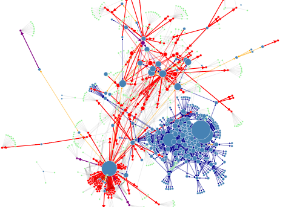

Each commoner has their own 'Commonshare' value, which represents their contribution to the Commonfare platform. Commonfare recognises a number of actions which a commoner can take, in order to contribute to the growth and sustainability of the platform. This page describes how to read and interpret the Commonshare graph.
Blue nodes represent Commoners - the users of the Commonfare platform
Red nodes are the stories created and commented on by Commoners
Purple nodes are listings that Commoners create to request or offer services to other Commoners
Green nodes are information tags that Commoners assign to stories, listings, or themselves
The sizes of these nodes represents how much Commonshare they have accrued from their interactions on Commonfare.net. These interactions are represented by the coloured linking arrows between them. The following describes each colour and its interaction.
Yellow links show where two Commoners have started a conversation. A button to do so is visible on a commoner's profile
Thick red links show that a Commoner has created a story, and thin red links represent a comment on a story. Stories are accessed from Commoner's Voices
Like stories, a thick purple link shows the creation of a listing, and a thin link shows a Commoner has commented on a listing. Listings can be seen in the Commonplace.
Dark blue links show an exchange of Commoncoin between two Commoners, perhaps for a service advertised in Commonplace, or simply a donation.
Increasing one's commonshare builds trust by showing that a commoner is an active, contributing member of the community. It is not based on their ability to provide a service or product. There is no such system that labels a Commoner as 'good' or 'bad'. Instead, reputation is built up through interactions that support the common good. Supporting others and offering services are valued, and so is requesting this support. Those who reach out and ask for help also contribute to a collaborative society.